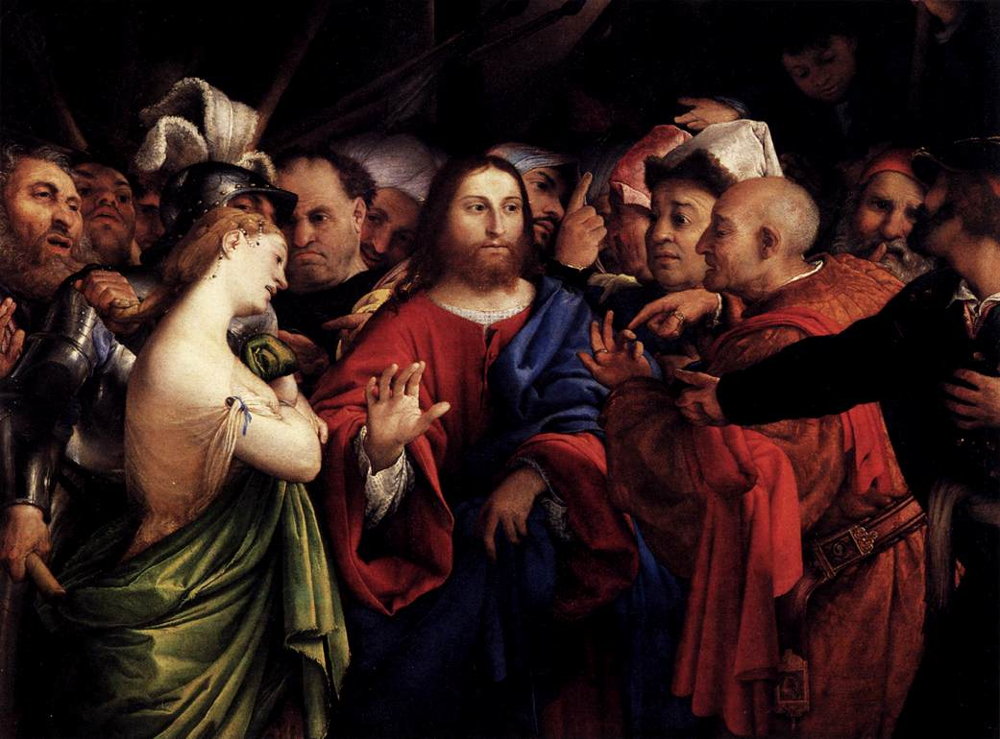

This article was originally a 2,000-word paper for a New Testament Survey course answering the prompt “write a synthetic outline of the Gospel of John, including major themes and narrative structure”. I’ve expanded a few sections and formatted it differently to work as a blog post here. I generally followed Merrill Tenney’s commentary. Hope you enjoy and find it edifying for your own studies!
The Apostle John wrote his Gospel account primarily as an evangelistic presentation to convince the readers to believe in Jesus as the Christ, the Son of God, for His gift of everlasting life, as declared in the purpose statement of 20:30–31.
Encapsulated in this thesis are key elements for the whole narrative. The account is a selective sampling of Jesus’ ministry with the specific purpose of proving Jesus is the Christ who offers spiritual life to whoever believes in Him. John is confident the record is definitive and effective in convincing the readers. The account is largely an apologetic defense of Christ. He is the Christ, the promised Messiah who is the Son of God with all authority and power. Therefore, believe in Him to receive spiritual life.
To believe means to receive something as true. It involves understanding the facts and agreeing with their reality. While a life of discipleship is the Christian calling for healthy living and avoiding chastisement, John presents content for unbelievers to receive eternal life.
Jesus’ gift is established by unique miracles called signs. These works point to the character and divinity of Christ to give validity to His power to provide eternal life. John records seven signs, each offering an illustrative picture of Jesus.
| № | Sign | Text | Theological Significance |
|---|---|---|---|
| 1 | Turning water into wine | John 2:1–11 | The first manifestation of His glory, and the disciples’ first recorded belief. Christ freely supplies what the old order had run out of. |
| 2 | Healing the nobleman’s son | John 4:46–54 | Faith rests on the bare word of Christ. The father believes and departs before he has any evidence the healing occurred. |
| 3 | Healing the paralytic | John 5:1–15 | Authority over the Sabbath and equality with the Father. Life is granted by the Son’s word alone, apart from any contribution of the man. |
| 4 | Feeding the five thousand | John 6:1–14 | Jesus is Himself the Bread of Life. The crowd wants the gift; He offers the Giver, and asks only that they believe. |
| 5 | Walking on the sea | John 6:16–21 | Deity disclosed privately to the disciples. The transitional sign turning the narrative from the crowds toward the Twelve. |
| 6 | Healing the man born blind | John 9:1–41 | Sight is given to the outsider and withheld from the self-assured. Spiritual blindness is chosen, not imposed. |
| 7 | Raising Lazarus | John 11:1–44 | Mastery over death itself, and the direct offer of resurrection life to anyone who believes in Him for it. |
Thematically, John shows the progression of the world’s reaction. These categories begin with genuine consideration, growing controversy, open conflict and crisis, conference with the disciples, and finally consummation in the atonement. Each episode reveals more evidence of Christ, ultimately climaxing in the bodily resurrection as the verdict for which Thomas could confess, “My Lord and my God!” (20:28). This last evidence transitions into the purpose statement to culminate into leading someone to believe in Christ for eternal life.[1]
Prologue: Who is the Word?
The Gospel of John begins by immediately defining the person of Christ as the incarnate Word of God who offers light to every man in the world (1:9). This new revelation is the gift of being born of God through believing in His name (1:12–13). The author affirms beholding the glory of the Son of God, making this narrative an eyewitness testimony. Moreover, the Father is seen perfectly only through Christ (1:17–18). Therefore, He should be believed.
Consideration Period
Chapters 1–4 represent a period of consideration. Key interviews affirm Jesus as the Christ who offers eternal life. The text only presents Nicodemus as a skeptic, left with the cliffhanger question, “How can these things be?” (3:9) The reader could likely identify with any character archetype at this point. They may be eagerly expecting as the disciples, a rejected outcast as the Samaritan woman, or a questioning Pharisee.
The period begins with the testimony of John the Baptist. He clarifies to the Jewish leadership he is neither the Prophet, Elijah, nor the Christ – but he did point to the Christ. Two of John’s disciples hear his declaration about Christ as He first appears. They follow Christ and gather Peter, Philip, and Nathanael. Here the invitation to “come and see” applies to the reader. Come and examine the person of Christ! For Philip, the Law and all the prophets gave sufficient evidence to convince him. Nathanael personally needed Jesus to reassure him (1:45–49).
Included in this section are several famous evangelistic verses. John 3:16 is often memorized by children today. It comes with a powerful comparison in 3:14 to Numbers 21:4–9. Believing in Christ for eternal life is as simple as a glance with no sense of meditation or commitment implied. In John 4:10, Jesus merely instructs the Samaritan woman, though living in sin, to ask for the gift of living water. Those who ask Christ for the source of eternal life are given that revelation to believe.[2]
John records two of the signs in this portion of the narrative. Jesus turns water into wine in a compassionate act of provision for the wedding at Cana. This miracle manifested His glory, leading the disciples to believe in Him (2:11). Then, the nobleman exercised faith in his son’s healing without seeing the result. Jesus rebukes the Jews for their obsession with examining signs. The truth of Jesus’ person and the reality of His gift were already evident. How many signs would they need? How many do you need?
Growing Controversy
Chapters 5 and 6 create a period of increasing resistance to Jesus’ ministry by the authorities. Naturally, their self-righteous traditions ran counter to Jesus’ claim to provide spiritually as a free gift.
The third sign of Jesus involved healing a paralyzed man on the Sabbath. Rather than rejoicing, the Jewish authorities sought to kill Jesus for seeming to break the Law. Jesus follows the miracle with a claim of equality with the Father, who granted Him power to raise the dead for the final judgment. The believer, however, immediately receives eternal life and will not face judgment (5:24–29).
Jesus defends Himself with four lines of evidence. The Father bore witness of Him, even audibly later in 12:28. John the Baptist testified He was the Christ. They even rejoiced for a time under his ministry. The miracles themselves pointed to Jesus’ greater authority. Finally, the Scriptures testify that Jesus is the source of eternal life.
After His fourth sign (and the transitional fifth, walking on the water), followers find Jesus again across the sea and merely desire more food. First, Jesus did not feed the 5,000 only to meet physical appetites but as a sign pointing to the Son of Man, Himself. Jesus dispels the idea of moral works for Him to give everlasting life. Believing is the only expected response. Finally, Jesus denies the need for additional signs. Just as God, not Moses, gave manna from Heaven, now Jesus had come as the true bread of life. He is the sign!
The physical bread, while miraculously provided, only could extend mortal life. The flesh of Jesus, the Bread of Life, was given later for the world on the cross (6:51), and also is His message, the words that He speaks, as the promise of eternal life (6:63). Significantly, the Bread of Life is unlike the manna provided to Israel in the wilderness. The wandering nation all died after eating it. But anyone who eats of the Bread of Life will never die. Believing in Christ is a moment in time that secures salvation for all time.
Notably, Jesus makes plain His own metaphor: “he who believes in Me has everlasting life” (6:47). Rather than a sacrament or lifestyle change, eating of the bread is simply being persuaded of His gift of eternal life.
Peter’s confession is a model for the reader. No one else has a message that provides eternal life. Because He is the Son of the living God, Jesus has the power to fulfill His promises. The disciples had formed a settled conclusion from the facts available.[3]

Open Conflict & Crisis
In 7:1 the geography shifts, centered around Jerusalem for the remainder of the gospel. Due to hostile tensions, Judea was off-limits. Even Jesus’ brothers, who were unbelieving at the time, recognized His avoidance could not always be the case. Jesus replied that His hour had not yet come (7:6). The concept of His hour is elsewhere found in 2:4, 4:21, and 5:25–29. God always has perfect timing to accomplish His will. In this context, His arrest and crucifixion were still future (7:30).
Jesus attended the Feast of Tabernacles and promised the future indwelling of the Spirit for believers. His attendance and bold claims caused several divisions among the Jews. Many said Jesus was a good man, while others claimed He deceived people (7:12). Still, others even believed Him demon-possessed (8:48). Some did believe Jesus was the Christ because of His miraculous signs (7:31), claims of equality with the Father (8:28–30), and the testimony of John the Baptist (10:41–42). The reader of the Gospel of John may fall into any of these camps. Today, as then, the question remains: was Jesus a liar, a lunatic, or Lord?
Then, Jesus forgave the adulterous woman. The Pharisees rudely interrupted Jesus’ teaching with a sham judgment and actually ignored a key part of the Law - that the witnesses themselves must cast the first stone, a principle applied from Deuteronomy 17:6-7. By asking this be fulfilled, Jesus exposed the fact it was a setup. Whatever He wrote in the ground sparked guilt in illuminating the truth (the KJV following the Textus Receptus adds “being convicted by their own conscience” to 8:9). He concluded this episode by declaring Himself the Light of the World, recalling the prologue’s introduction (1:4-5). Being the Light of the World, Jesus provides clarity in the disciple’s daily walk in the truth.
Therefore, anyone can trust His promise that if you keep His word, you will never see death (8:51). The word for keep (τηρήσῃ) means to observe, playing off the latter half of the verse (“not see death,” θάνατον οὐ μὴ θεωρήσῃ εἰς τὸν αἰῶνα). The context does not imply committing one’s life as a kind of performance. Rather, they needed to see the message as true in believing it (8:45). All people physically die, yet the believing ones have an eternity secure because of God’s life in them.
Next, Jesus restored the vision to a man born blind, a sign never recorded in the Jewish canon. This man, previously excluded from the temple worship, had the spiritual sight to see Jesus for His true identity, someone worthy of worship (9:38). The educated Pharisees had the capacity to perceive the evidence just as well as anyone. They, however, had developed a spiritual blindness. Jesus came to open the eyes of the blind, physically and spiritually (9:40–41, Isaiah 42:7).
The formerly blind man formed a natural progression in understanding the person of Jesus. When first asked how his eyes were opened he answered that a man named Jesus told him to wash in the pool (9:11). Then later told the Pharisees that man was a prophet. Finally, when Jesus met him again he worshiped Him as the Son of God, believing in His name.
While they refused to see, Jesus went further by asserting they were also deaf to His voice. Jesus, as the Good Shepherd, knows and cares for His sheep. They listen to Him. If you want security in the Father’s hands, listen to the evidence. The miraculous works, or signs, should convince them (10:25, 37–38).
The final public miracle of Jesus recorded in the Gospel of John takes special prominence in the narrative as proof of His supernatural claims. He exercised mastery over death by resurrecting Lazarus. He offers this same victory now to anyone who believes in Him for it. The miracle, like all the signs, had a specific purpose as a tool of evangelism (11:15).
“I am the resurrection and the life. He who believes in me will still live, even if he dies. Whoever lives and believes in me will never die. Do you believe this?” John 11:25–26 (WEB)
Indeed, Jesus’ claim to be the very power of resurrection and life for the believer ends with the powerful call to action, “Do you believe this?” The central message of the Gospel of John is to persuade the reader in the affirmative. The abundance of evidence, including unique miraculous signs and key witnesses, should lead the reader to an unavoidable conclusion.
Disciples Conference
Yet, His own, the Jewish people, would not all receive Him (1:11). John comments that God gave them over to hardening because they repeatedly rejected the light brought to them. Isaiah 53:1 predicted their disdain for Christ (12:37–40).[4]
Now, the Jewish hatred peaking, Jesus’ hour for His crucifixion had come (12:23). In the final Passover recorded in John, Jesus withdrew with the apostles and was hidden from the world (12:36). Jesus focused on teaching them discipleship, rather than the previous main theme of evangelism. Believers can bear fruit, or productive spiritual lives, if they abide in Christ (15:4).
Jesus promises to send the Holy Spirit to convict the world, providing a significant future witness. Many characters in the Gospel of John believe. However, Jesus would soon ascend, and His works would not be visible any longer. Nevertheless, afterward, Christ will draw all peoples to Himself through the revelation of the Holy Spirit. The world is now conscious of sin, contrary to God’s perfect standard, and the impending condemnation. The Spirit would empower the disciples to have effective ministries by guiding them into all truth (12:32, 16:8–13).[5]
This section concludes with Jesus’ beautiful High Priestly Prayer in John 17. Here the text points to yet another witness: the unity of the disciples. Jesus is one with the Father. Now, He calls believers to demonstrate that same harmony in mind and purpose to illustrate the love of Christ (17:23).
Consummation
Jesus was arrested and promptly ushered into a sham trial. The Gospel of John has been carefully outlining categories of evidence for Jesus’ claim through differing periods of reaction, geography, and chronology. In sharp contrast, the Jewish authorities ignored traditional procedural matters and the rights of the accused. Caiaphas could not ask the defendant to incriminate Himself, nor could He be beaten without evidence of wrongdoing (18:22–23).[6]
Before Pilate, Christ made clear He bore witness to the truth. The Gospel of John is a trial of the truth only heard from God. The governor asked the pivotal question “What is truth?” Jesus answered it back in John 14:6. He is the Truth! As Peter proclaimed, only His message has words of life. Every other system of thought contains falsehood and provides no spiritual substance. Whether Pilate meant the question in jeering sarcasm or genuine curiosity is open to interpretation. In any case, the reader is invited to answer the question given the evidence presented.
When all prophecy had been fulfilled, Jesus proclaimed victory on the cross, saying “It is finished!”
The resurrection account is concise. Jesus graces doubting Thomas to meet his criteria to believe. Though Jesus affirms a greater blessing on those who believe without having seen Him resurrected.
Epilogue: What is Your Response?
The Gospel of John concludes with the disciples enjoying breakfast with the resurrected Lord. After recording Peter’s restoration and predicting his martyrdom, John reveals himself as the eyewitness authoring the Gospel. He admitted countless more books could be written on Jesus. The need for the response is overwhelming: believe in Him for life.
Then, in a separate call, Jesus addressed Peter, an existing believer, for discipleship. He restored him by directing him to tend His lambs and sheep. The apostles had a special place of leadership and needed to be an example in humility. The final words of Jesus form a model of Christian growth. If you want to experience blessings and maturity in faith, follow Jesus (21:19).
Notes
1. Merrill C. Tenney, John, The Gospel of Belief: An Analytic Study of the Text, pbk. ed. (Grand Rapids, MI: Eerdmans, 1997), 40–41. ↩
2. Charles Caldwell Ryrie, So Great Salvation: What It Means to Believe in Jesus Christ (Wheaton, Ill.: Victor Books, 1989), 106–111. ↩
3. Tenney, John, the Gospel of Belief, 116–125. ↩
4. Robert N. Wilkin, ed., The Grace New Testament Commentary, rev. ed. (Denton, TX: Grace Evangelical Society, 2019), 214. ↩
5. Tenney, John, the Gospel of Belief, 236–237. ↩
6. Leon Morris, The Gospel According to John: The English Text with Introduction, Exposition and Notes, repr., The New International Commentary on the New Testament (Grand Rapids, Mich: Eerdmans, 1992), 755–757. ↩
Bibliography
Morris, Leon. The Gospel According to John: The English Text with Introduction, Exposition and Notes. Repr. The New International Commentary on the New Testament. Grand Rapids, Mich: Eerdmans, 1992.
Ryrie, Charles Caldwell. So Great Salvation: What It Means to Believe in Jesus Christ. Wheaton, Ill.: Victor Books, 1989.
Tenney, Merrill C. John, The Gospel of Belief: An Analytic Study of the Text. Pbk. ed. Grand Rapids, MI: Eerdmans, 1997.
Wilkin, Robert N., ed. The Grace New Testament Commentary. Revised edition. Denton, TX: Grace Evangelical Society, 2019.